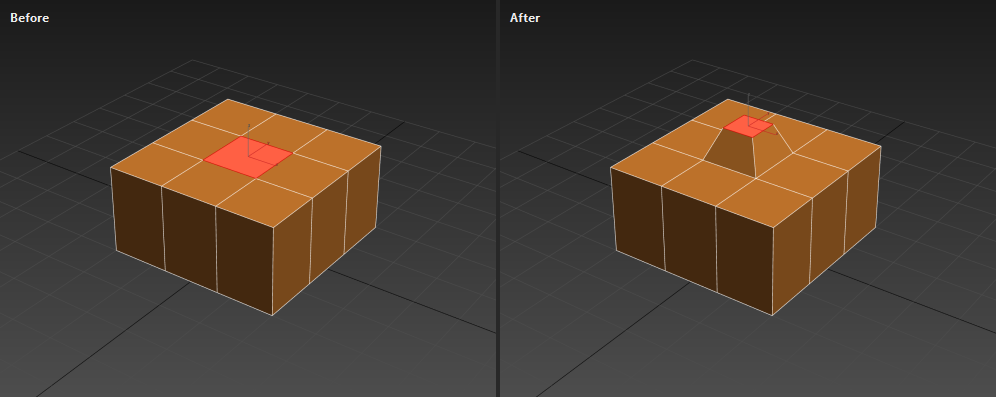

Tools / Smart Bevel
Smart Bevel
One key that bevels or chamfers, whatever level you are on.
What it does
Smart Bevel does the obvious thing for the level you are working at, so you only remember one key. It opens the settings for the matching operation on the Editable Poly or Edit Poly you are editing.

One key on edges, then on vertices: the right bevel dialog opens each time.
How to use it
- Go to a sub-object level of an Editable Poly or Edit Poly.
- Press Ctrl+B.
- The settings window for the matching operation opens.
Options
| Level | What opens |
|---|---|
| Vertex | Chamfer |
| Edge or border | Chamfer |
| Polygon | Bevel |
| Edge or face in Unwrap UVW | Break |
Good to know
- At element level nothing opens.
- You can also run it from the 9000 Toolkit category.